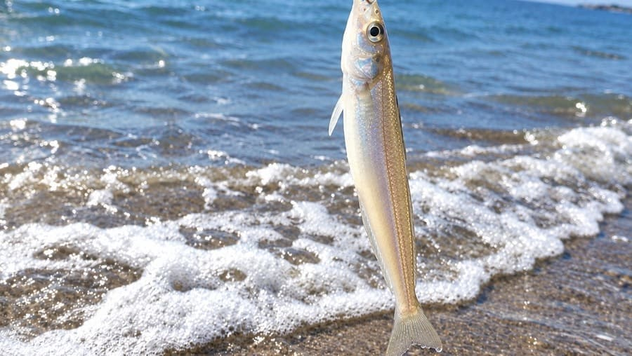

砂浜の投げ釣り入門｜シロギス・カレイの仕掛けと釣れるポイントの見つけ方
 広い砂浜から沖へ仕掛けを投げ、海底に潜む魚を狙う投げ釣り。足場がよく、釣り座も限られないため、初心者が最初に挑戦しやすい釣りのひとつです。
広い砂浜から沖へ仕掛けを投げ、海底に潜む魚を狙う投げ釣り。足場がよく、釣り座も限られないため、初心者が最初に挑戦しやすい釣りのひとつです。
主役は暖かい季節のシロギスと、秋から冬に人気の高まるカレイ。同じ砂底の魚でも、釣り方は「探す」と「待つ」で大きく変わります。この記事では砂浜ならではの釣り方の違いと海底の読み方に絞って解説します。生態やタックルの詳細は、各魚種の記事もあわせてご覧ください。
1. 砂浜の投げ釣りは「探す」と「待つ」
砂底にはゴカイ類や小型の甲殻類が暮らしていて、これをエサにするシロギスやカレイが集まってきます。ただ砂浜は広い分、魚がどこにいるのか分からないのが難しいところ。そこで釣り方は大きく2つに分かれます。
- 引き釣り（シロギス向き）：投げたらオモリを海底に沿ってゆっくり引き、群れの居場所を探ります。距離や方向を変えて広範囲を探れるのが強みです。
- 置き竿（カレイ向き）：地形の変化や実績のある場所に仕掛けを置き、じっくりアタリを待ちます。
シロギスを置き竿で狙うことも、カレイを誘うこともできますが、最初は「シロギスは引く、カレイは置く」と覚えると整理しやすいでしょう。
考え方の違いをまとめると、シロギスは「群れの位置と距離」を探す釣り、カレイは「仕掛けを置く場所とタイミング」を見極める釣りです。なおカレイの接岸時期は地域や種類で異なり、秋から冬に好機を迎える地域が多いものの、全国一律ではありません。
2. エサは細身のジャリメが基本
定番はジャリメ（石ゴカイ）。細身で小さなハリにも付けやすく、どちらの魚にも使えます。
竿は、近距離を狙うチョイ投げなら扱いやすい短めの竿や汎用タックルでも始められます。遠投が必要な本格仕様の投げ竿は、慣れてから検討しても遅くありません。
テンビンは、底を引く釣りならL型、根掛かりが気になる場所ならジェットテンビンが選択肢。向き不向きは海底の状態次第です。
シロギスは「小さく・自然に」

ジャリメをハリに沿わせる通し刺しにし、ハリ先を出してタラシは1cm程度に。仕掛けは市販のシロギス用で十分で、最初はハリ数の少ないものが絡みにくく扱いやすくなります。反応が悪ければ、タラシを少し長くして動きで誘ってみましょう。